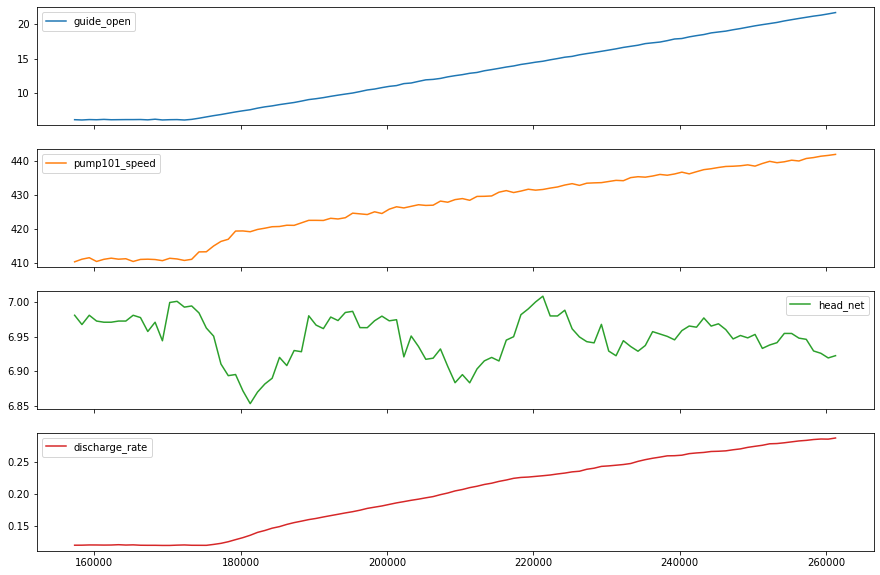
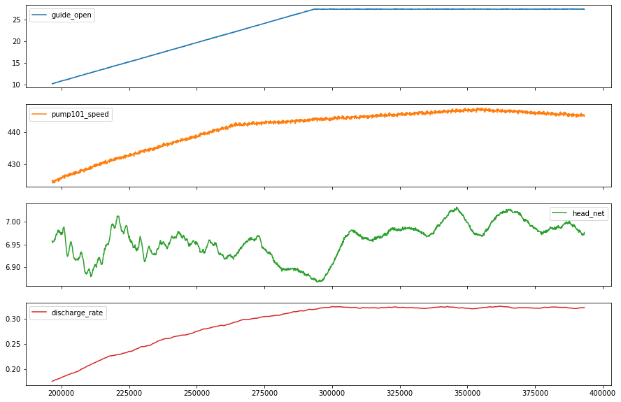

Tensorflow – Deep learning to model transient dynamics of hydro Turbine¶
import pandas as pd
import numpy as np
import matplotlib.pyplot as plt
import seaborn as sns
from pandas.plotting import register_matplotlib_converters
# plt.style.use(['science','no-latex'])
# plt.rcParams["font.family"] = "Times New Roman"
%load_ext autoreload
%autoreload 2
import tensorflow as tf
1, Load the data¶
#from tensorflow import keras
#from google.colab import drive
#drive.mount('/content/drive')
#df = pd.read_csv('/content/drive/MyDrive/Data/vattenfall_turbine.csv')
#drive.flush_and_unmount()
#print('NB: Unmount the google cloud driver')
df = pd.read_csv(r'E:\FEM\Python\bitbucket\Vattenfall_rnn\vattenfall_turbine.csv')
keys = df.keys().values
feature_keys = keys[np.arange(1,5).tolist() + np.arange(7,10).tolist()]
time_key = keys[0]
plot_cols = feature_keys[0:len(feature_keys):2]
plot_features = df[plot_cols]
#plot_features.index = df[time_key]
fig1 = plot_features.plot(subplots=True, figsize=(10, 8))
plt.show()
from IPython.display import display, Markdown
#display(Markdown(' <font size="6"><span style="color:blue">**Lets take a close look at the time series.**</span> </font>'))
display(Markdown('<span style="color:blue;font-size:50px">**Lets take a close look at the time series.**</span>'))
plot_features = df[plot_cols][int(len(df)/5):int(len(df)/3):1000]
#plot_features.index = df[time_key][:480]
fig2 = plot_features.plot(subplots=True, figsize=(15, 10))

Lets take a close look at the time series.
2, Preprocessing data: normalize, train, validation, test, etc.¶
2.1, resample the data with low-resolution¶
df_train = df[feature_keys[0:7:2]][int(len(df)/4):int(len(df)/2):100]
display(Markdown('<span style="color:red; font-size:30px">**No. of the values in the training dataset is: %d**</span>' %len(df_train)))
# plot the data and check their variations along time
df_train.plot(subplots=True, figsize=(15, 10))
plt.show()
#print('No. of the values in the training dataset is: %d' %len(df_train))
display(Markdown('<span style="color:blue; font-size:20px">**Plot the heatmap for variation of standard deviation**</span>'))
# check he correlation
import seaborn as sns
plt.figure(figsize=(12, 6))
sns.heatmap(df_train.corr(), annot=True, fmt=".2f")
plt.show()
No. of the values in the training dataset is: 1967
Plot the heatmap for variation of standard deviation

from mpl_toolkits.axes_grid1 import make_axes_locatable
from matplotlib import colors, ticker, cm
fig = plt.figure(figsize=(30, 10))
fig.add_subplot(131)
plt.hist2d(df['head_gross'], df['guide_open'], bins=(25, 25))
plt.xlabel('head_gross', size=20)
plt.ylabel('guide_open', size=20)
plt.colorbar()
fig.add_subplot(132)
plt.hist2d(df['head_gross'], df['pump101_speed'], bins=(25, 25))
plt.xlabel('head_gross', size=20)
plt.ylabel('pump101_speed', size=20)
plt.colorbar()
fig.add_subplot(133)
plt.hist2d(df['head_gross'], df['discharge_rate'], bins=(50, 50))
plt.xlabel('head_gross', size=20)
plt.ylabel('discharge_rate', size=20)
plt.colorbar()
<matplotlib.colorbar.Colorbar at 0x27af214d490>

features = df.keys()
features
Index(['time', 'guide_open', 'running_speed', 'pump101_speed', 'pump102_speed',
'pump101_set', 'pump102_set', 'head_net', 'head_gross',
'discharge_rate', 'unknow_Hg', 'unknow_Hst', 'unknow_Qt',
'unknown_Pabs'],
dtype='object')
2.2, autocorrelation function (ACF) and (PACF) to check time dependence¶
def autocorr(x):
result = np.correlate(x, x, mode='full')
return result[int(result.size/2):]
acf_open = autocorr(df_train.guide_open)
from statsmodels.graphics.tsaplots import plot_acf
import statsmodels.api as sm
fig, ax = plt.subplots(2,2,figsize=(20,15))
sm.graphics.tsa.plot_acf(df_train.guide_open.squeeze(), lags=40, ax=ax[0,0])
ax[0,0].set_title("Autocorrelation for guide-open", fontsize=20, color='blue')
ax[0,0].set_xlabel(r'Time Lag: sample frequency $\times$ 100', fontsize=20, color='blue')
sm.graphics.tsa.plot_pacf(df_train.guide_open.squeeze(), lags=40, ax=ax[0, 1])
ax[0,1].set_title("PACF for guide-open", fontsize=20, color='blue')
ax[0,1].set_xlabel(r'Time Lag: sample frequency $\times$ 100', fontsize=20, color='blue')
sm.graphics.tsa.plot_acf(df_train.pump101_speed.squeeze(), lags=40, ax=ax[1,0])
ax[1,0].set_title("Autocorrelation for Pump101 speed", fontsize=20, color='blue')
ax[1,0].set_xlabel(r'Time Lag: sample frequency $\times$ 100', fontsize=20, color='blue')
sm.graphics.tsa.plot_pacf(df_train.pump101_speed.squeeze(), lags=40, ax=ax[1,1])
ax[1,1].set_title("PACF for Pump101 speed", fontsize=20, color='blue')
ax[1,1].set_xlabel(r'Time Lag: sample frequency $\times$ 100', fontsize=20, color='blue')
plt.show()

2.3 crossing autocorrelationship for various parameters¶
# NB: we have resampled the data for the autocorreltion analysis
import statsmodels.tsa.stattools as smt
xacf = smt.ccf(df_train.guide_open.squeeze()[0:1900:50], df_train.head_net.squeeze()[0:1900:50], adjusted=False)
acf1 = smt.ccf(df_train.guide_open.squeeze()[0:1900:50], df_train.guide_open.squeeze()[0:1900:50], adjusted=False)
acf2 = smt.ccf(df_train.head_net.squeeze()[0:1900:50], df_train.head_net.squeeze()[0:1900:50], adjusted=False)
fig, [ax1, ax2, ax3] = plt.subplots(1, 3, sharex=True, figsize=(30,12))
i = 1
for p in xacf:
x = [i, i]
ax1.plot([i, i], [0, p], 'b', linewidth=3)
i= i + 1
ax1.grid(True)
ax1.set_title("Cross ACF between guide-open and Head_net", fontsize=20, color='blue')
ax1.set_xlabel(r'Time Lag: sample frequency $\times$ 5000', fontsize=20, color='blue')
i = 1
for p in acf1:
x = [i, i]
ax2.plot([i, i], [0, p], 'b', linewidth=3)
i= i + 1
ax2.grid(True)
ax2.set_title("ACF of guide-open signal", fontsize=20, color='blue')
ax2.set_xlabel(r'Time Lag: sample frequency $\times$ 5000', fontsize=20, color='blue')
i = 1
for p in acf2:
x = [i, i]
ax3.plot([i, i], [0, p], 'b', linewidth=3)
i= i + 1
ax3.grid(True)
ax3.set_title("ACF ofHead_net", fontsize=20, color='blue')
ax3.set_xlabel(r'Time Lag: sample frequency $\times$ 5000', fontsize=20, color='blue')
plt.show()
# Autocorrelation between guide_opan and pump101_speed
xacf = smt.ccf(df_train.guide_open.squeeze()[0:1900:50], df_train.pump101_speed.squeeze()[0:1900:50], adjusted=False)
acf1 = smt.ccf(df_train.guide_open.squeeze()[0:1900:50], df_train.guide_open.squeeze()[0:1900:50], adjusted=False)
acf2 = smt.ccf(df_train.pump101_speed.squeeze()[0:1900:50], df_train.pump101_speed.squeeze()[0:1900:50], adjusted=False)
fig, [ax1, ax2, ax3] = plt.subplots(1, 3, sharex=True, figsize=(30,12))
i = 1
for p in xacf:
x = [i, i]
ax1.plot([i, i], [0, p], 'b', linewidth=3)
i= i + 1
ax1.grid(True)
ax1.set_title("Cross ACF between guide-open and pump101_speed", fontsize=20, color='blue')
ax1.set_xlabel(r'Time Lag: sample frequency $\times$ 5000', fontsize=20, color='blue')
i = 1
for p in acf1:
x = [i, i]
ax2.plot([i, i], [0, p], 'b', linewidth=3)
i= i + 1
ax2.grid(True)
ax2.set_title("ACF of guide-open signal", fontsize=20, color='blue')
ax2.set_xlabel(r'Time Lag: sample frequency $\times$ 5000', fontsize=20, color='blue')
i = 1
for p in acf2:
x = [i, i]
ax3.plot([i, i], [0, p], 'b', linewidth=3)
i= i + 1
ax3.grid(True)
ax3.set_title("ACF of pump101_speed signal", fontsize=20, color='blue')
ax3.set_xlabel(r'Time Lag: sample frequency $\times$ 5000', fontsize=20, color='blue')
plt.show()

2.4, normalize the data¶
# First, we assume all data are used for the training (the time series is not that stationary for the prediction)
df_train_mean = df_train.mean()
df_train_std = df_train.std()
train_df = (df_train-df_train_mean) / df_train_std
fig2 = train_df.plot(subplots=True,figsize=(15,10))
# Second, plot the standand deviation of features within this dataframe
df_std = train_df.melt(var_name='Column', value_name='Normalized')
plt.figure(figsize=(12, 6))
ax = sns.violinplot(x='Column', y='Normalized', data=df_std)
fig3 = ax.set_xticklabels(train_df.keys(), rotation=90)

# tf.convert_to_tensor(new_df)
new_df = train_df.reset_index(drop=True)
target = new_df.pop('guide_open')
#new_df.head()
target.head()
new_df = tf.convert_to_tensor(new_df)
#normalizer = tf.keras.layers.Normalization(axis=-1)
#normalizer.adapt(numeric_features)
feature_keys
array(['guide_open', 'running_speed', 'pump101_speed', 'pump102_speed',
'head_net', 'head_gross', 'discharge_rate'], dtype=object)
3, Understand the dataset construction and build basic models (treated as independent dataset)¶
df_train = df[feature_keys][int(len(df)/4):int(len(df)/2):100]
df_train = df_train.reset_index(drop=True)
#df_train.pop('time')
df_train.pop('head_net')
df_target = df_train.pop('head_gross')
df_train.head()
| guide_open | running_speed | pump101_speed | pump102_speed | discharge_rate | |
|---|---|---|---|---|---|
| 0 | 10.258026 | 883.147506 | 424.766713 | 423.792913 | 0.175680 |
| 1 | 10.220808 | 883.147506 | 424.633645 | 424.918785 | 0.176028 |
| 2 | 10.313853 | 882.934738 | 423.968301 | 425.084355 | 0.176227 |
| 3 | 10.302687 | 883.041122 | 424.567110 | 424.422077 | 0.176376 |
| 4 | 10.354793 | 883.041122 | 424.866515 | 424.157165 | 0.176774 |
# Pre-normalize the features for ML analysis
norm = tf.keras.layers.Normalization(axis=-1)
norm.adapt(df_train)
tf_train = norm(df_train)
# normalize the target (output)
norm_target = tf.keras.layers.Normalization(axis=None)
norm_target.adapt(df_target)
tf_target = norm_target(df_target)
# configure the model
BATCH_SIZE = 500
def get_basic_model():
model = tf.keras.Sequential([
norm,
tf.keras.layers.Dense(50, activation='relu'),
tf.keras.layers.Dense(50, activation='relu'),
tf.keras.layers.Dense(1)
])
model.compile(optimizer='adam',
loss=tf.keras.losses.BinaryCrossentropy(from_logits=True),
metrics=['accuracy'])
return model
model = get_basic_model()
model.fit(tf_train, tf_target, epochs=10, batch_size=BATCH_SIZE)
Epoch 1/10
4/4 [==============================] - 1s 4ms/step - loss: 1.9068 - accuracy: 0.0000e+00
Epoch 2/10
4/4 [==============================] - 0s 4ms/step - loss: 0.0823 - accuracy: 0.0000e+00
Epoch 3/10
4/4 [==============================] - 0s 5ms/step - loss: 0.8043 - accuracy: 0.0000e+00
Epoch 4/10
4/4 [==============================] - 0s 4ms/step - loss: -0.5637 - accuracy: 0.0000e+00
Epoch 5/10
4/4 [==============================] - 0s 4ms/step - loss: -0.7082 - accuracy: 0.0000e+00
Epoch 6/10
4/4 [==============================] - 0s 5ms/step - loss: -0.7467 - accuracy: 0.0000e+00
Epoch 7/10
4/4 [==============================] - 0s 4ms/step - loss: -1.3473 - accuracy: 0.0000e+00
Epoch 8/10
4/4 [==============================] - 0s 5ms/step - loss: -1.7651 - accuracy: 0.0000e+00
Epoch 9/10
4/4 [==============================] - 0s 4ms/step - loss: -1.8266 - accuracy: 0.0000e+00
Epoch 10/10
4/4 [==============================] - 0s 4ms/step - loss: -1.8662 - accuracy: 0.0000e+00
<keras.callbacks.History at 0x27b2cd6e310>
plt.plot(model.predict(df_train),'b')
plt.plot(tf_target,'k')
plt.show()

norm1 = tf.keras.layers.Normalization(axis =-1)
norm1.adapt(df_train)
tf_train = norm1(df_train)
norm2 = tf.keras.layers.Normalization(axis = None)
norm2.adapt(df_target)
tf_target= norm2(df_target)
dataset_df = tf.data.Dataset.from_tensor_slices((tf_train, tf_target))
dataset_batches = dataset_df.shuffle(100).batch(BATCH_SIZE)
model = get_basic_model()
model.fit(dataset_batches, epochs=10)
Epoch 1/10
4/4 [==============================] - 0s 5ms/step - loss: 73.8814 - accuracy: 0.0000e+00
Epoch 2/10
4/4 [==============================] - 0s 4ms/step - loss: 24.8696 - accuracy: 0.0000e+00
Epoch 3/10
4/4 [==============================] - 0s 5ms/step - loss: 14.5230 - accuracy: 0.0000e+00
Epoch 4/10
4/4 [==============================] - 0s 6ms/step - loss: 9.8505 - accuracy: 0.0000e+00
Epoch 5/10
4/4 [==============================] - 0s 6ms/step - loss: 7.2704 - accuracy: 0.0000e+00
Epoch 6/10
4/4 [==============================] - 0s 4ms/step - loss: 5.7677 - accuracy: 0.0000e+00
Epoch 7/10
4/4 [==============================] - 0s 5ms/step - loss: 4.7755 - accuracy: 0.0000e+00
Epoch 8/10
4/4 [==============================] - 0s 5ms/step - loss: 4.1848 - accuracy: 0.0000e+00
Epoch 9/10
4/4 [==============================] - 0s 6ms/step - loss: 3.7388 - accuracy: 0.0000e+00
Epoch 10/10
4/4 [==============================] - 0s 4ms/step - loss: 3.3513 - accuracy: 0.0000e+00
<keras.callbacks.History at 0x27af354adf0>
3.2, Understand datastructure of the tensorflow package –> formulate rolling windowed dataset –> for model in Section 4¶
# split the time series of data into train (70%), test (20%) and validation (10%)
#n = len(df_train)
df_train = df[feature_keys]
df_train.pop('head_net')
df_train.pop('discharge_rate')
n = len(df_train)
# start to divide them
train_df = df_train[0:int(n*0.7)]
test_df = df_train[int(n*0.7):int(n*0.9)]
val_df = df_train[int(n*0.9):]
df_train.shape[1]
## Tensorflow dataset donot have buildin functions to estimate the mean and standard deviation
#normalizer = tf.keras.layers.Normalization(axis=-1)
#normalizer.adapt(train_df)
#train_df = normalizer(train_df)
train_mean = train_df.mean()
train_std = train_df.std()
train_df = (train_df - train_mean)/train_std
test_df = (test_df - train_mean)/train_std
val_df = (val_df - train_mean)/train_std
df_std = (df_train - train_mean) / train_std
df_std = df_std.melt(var_name='Column', value_name='Normalized')
fig, ax = plt.subplots(figsize=[20, 10])
ax = sns.violinplot(x='Column', y='Normalized', data=df_std)
ax.set_xticklabels(ax.get_xticks(), size = 30)
ax.set_yticklabels(ax.get_yticks(), size = 30)
<ipython-input-17-bf96d0c125a6>:31: UserWarning: FixedFormatter should only be used together with FixedLocator
ax.set_yticklabels(ax.get_yticks(), size = 30)
[Text(0, -6.0, '-6.0'),
Text(0, -4.0, '-4.0'),
Text(0, -2.0, '-2.0'),
Text(0, 0.0, '0.0'),
Text(0, 2.0, '2.0'),
Text(0, 4.0, '4.0')]

4, Dataset (rolling/windowed dataset) for time series analysis¶
4.1, Read data into the data class¶
# 4.1.1, Indexes and offsets
## NB: the data for training, testing and validation should be store here first!!
class WindowGenerator():
def __init__(self, input_width, label_width, shift,
train_df=train_df, val_df=val_df, test_df=test_df,
label_columns=None):
# Store the raw data.
self.train_df = train_df
self.val_df = val_df
self.test_df = test_df
# Work out the label column indices.
self.label_columns = label_columns
if label_columns is not None:
self.label_columns_indices = {name: i for i, name in
enumerate(label_columns)}
self.column_indices = {name: i for i, name in
enumerate(train_df.columns)}
# Work out the window parameters.
self.input_width = input_width
self.label_width = label_width
self.shift = shift
self.total_window_size = input_width + shift
self.input_slice = slice(0, input_width)
self.input_indices = np.arange(self.total_window_size)[self.input_slice]
self.label_start = self.total_window_size - self.label_width
self.labels_slice = slice(self.label_start, None)
self.label_indices = np.arange(self.total_window_size)[self.labels_slice]
def __repr__(self):
return '\n'.join([
f'Total window size: {self.total_window_size}',
f'Input indices: {self.input_indices}',
f'Label indices: {self.label_indices}',
f'Label column name(s): {self.label_columns}'])
# 4.1.2, Split the window
def split_window(self, features):
inputs = features[:, self.input_slice, :]
labels = features[:, self.labels_slice, :]
if self.label_columns is not None:
labels = tf.stack(
[labels[:, :, self.column_indices[name]] for name in self.label_columns],
axis=-1)
# Slicing doesn't preserve static shape information, so set the shapes
# manually. This way the `tf.data.Datasets` are easier to inspect.
inputs.set_shape([None, self.input_width, None])
labels.set_shape([None, self.label_width, None])
return inputs, labels
WindowGenerator.split_window = split_window
# 4.1.3, plot the time series ################# NB: this also needs to set up the label/output parameter
def plot(self, model=None, plot_col='head_gross', max_subplots=3):
inputs, labels = self.example
plt.figure(figsize=(12, 8))
plot_col_index = self.column_indices[plot_col]
max_n = min(max_subplots, len(inputs))
for n in range(max_n):
plt.subplot(max_n, 1, n+1)
plt.ylabel(f'{plot_col} [normed]')
plt.plot(self.input_indices, inputs[n, :, plot_col_index],
label='Inputs', marker='.', zorder=-10)
if self.label_columns:
label_col_index = self.label_columns_indices.get(plot_col, None)
else:
label_col_index = plot_col_index
if label_col_index is None:
continue
plt.scatter(self.label_indices, labels[n, :, label_col_index],
edgecolors='k', label='Labels', c='#2ca02c', s=64)
if model is not None:
predictions = model(inputs)
plt.scatter(self.label_indices, predictions[n, :, label_col_index],
marker='X', edgecolors='k', label='Predictions',
c='#ff7f0e', s=64)
if n == 0:
plt.legend()
plt.xlabel('Time [minisecond]')
WindowGenerator.plot = plot
4.2, Check the constructed basic dataset class¶
# Test of windowed dataset
#w0 = WindowGenerator(input_width=24, label_width=1, shift=24, label_columns=['head_gross'])
w1 = WindowGenerator(input_width=24, label_width=1, shift=24, label_columns=None)
w=w1
# Stack three slices, the length of the total window.
example_window = tf.stack([np.array(train_df[:w.total_window_size]),
np.array(train_df[100:100+w.total_window_size]),
np.array(train_df[200:200+w.total_window_size])])
example_inputs, example_labels = w.split_window(example_window)
print('All shapes are: (batch, time, features)')
print(f'Window shape: {example_window.shape}')
print(f'Inputs shape: {example_inputs.shape}')
print(f'Labels shape: {example_labels.shape}')
All shapes are: (batch, time, features)
Window shape: (3, 48, 5)
Inputs shape: (3, 24, 5)
Labels shape: (3, 1, 5)
w.example = example_inputs, example_labels
w.plot(plot_col='guide_open')
4.3, Formulate train, test, validation datasets in the data structure¶
def make_dataset(self, data):
data = np.array(data, dtype=np.float32)
ds = tf.keras.preprocessing.timeseries_dataset_from_array(
data=data,
targets=None,
sequence_length=self.total_window_size,
sequence_stride=1,
shuffle=True,
batch_size=32,)
ds = ds.map(self.split_window)
return ds
WindowGenerator.make_dataset = make_dataset
# add properties to the dataset
@property
def train(self):
return self.make_dataset(self.train_df)
@property
def val(self):
return self.make_dataset(self.val_df)
@property
def test(self):
return self.make_dataset(self.test_df)
@property
def example(self):
"""Get and cache an example batch of `inputs, labels` for plotting."""
result = getattr(self, '_example', None)
if result is None:
# No example batch was found, so get one from the `.train` dataset
result = next(iter(self.train))
# And cache it for next time
self._example = result
return result
WindowGenerator.train = train
WindowGenerator.val = val
WindowGenerator.test = test
WindowGenerator.example = example
# Run the example to get the index
for example_inputs, example_labels in w.train.take(1):
print(f'Inputs shape (batch, time, features): {example_inputs.shape}')
print(f'Labels shape (batch, time, features): {example_labels.shape}')
Inputs shape (batch, time, features): (32, 24, 5)
Labels shape (batch, time, features): (32, 1, 5)
for example_inputs, example_labels in w.train.take(1):
print(f'Inputs shape (batch, time, features): {example_inputs.shape}')
print(f'Labels shape (batch, time, features): {example_labels.shape}')
Inputs shape (batch, time, features): (32, 24, 5)
Labels shape (batch, time, features): (32, 1, 5)
5, Single step model: $\(Head\_t = f(guide\_open_{(t-1, t-2, ...)}, pump\_speed_{(t-1, t-2, ...)}, discharge\_rate_{(t-1, t-2, ...)},...)\)$¶
5.1, Baseline and linear models¶
Baseline narrow window |
Baseline wide window |
Linear model with narrow window |
Linear model with wide window |
|---|---|---|---|
|
|
|
|


Test 1: narrow window dataset (single output window)¶
# Get the first dataset (all features as output)
single_step_window = WindowGenerator(
input_width=1, label_width=1, shift=1,
label_columns = ['head_gross']) # we can set "label_columns=None"
single_step_window
for example_inputs, example_labels in single_step_window.train.take(1):
print(f'Inputs shape (batch, time, features): {example_inputs.shape}')
print(f'Labels shape (batch, time, features): {example_labels.shape}')
single_step_window.label_columns, single_step_window.column_indices
Inputs shape (batch, time, features): (32, 1, 5)
Labels shape (batch, time, features): (32, 1, 1)
(['head_gross'],
{'guide_open': 0,
'running_speed': 1,
'pump101_speed': 2,
'pump102_speed': 3,
'head_gross': 4})
# Baseline model
class Baseline(tf.keras.Model):
def __init__(self, label_index=None):
super().__init__()
self.label_index = label_index
def call(self, inputs):
if self.label_index is None:
return inputs
result = inputs[:, :, self.label_index]
return result[:, :, tf.newaxis]
# Build the model
baseline = Baseline(label_index=single_step_window.column_indices['head_gross'])
#baseline = Baseline(label_index=None)
baseline.compile(loss=tf.losses.MeanSquaredError(),
metrics=[tf.metrics.MeanAbsoluteError()])
val_performance = {}
performance = {}
val_performance['Baseline'] = baseline.evaluate(single_step_window.val)
performance['Baseline'] = baseline.evaluate(single_step_window.test, verbose=0)
2458/2458 [==============================] - 4s 2ms/step - loss: 0.0034 - mean_absolute_error: 0.0432
single_step_window.test
<MapDataset shapes: ((None, 1, 5), (None, 1, 1)), types: (tf.float32, tf.float32)>
Test 2: wide output window¶
wide_window = WindowGenerator(
input_width=300, label_width=300, shift=2,
label_columns=['head_gross']) ################# NB: it is very important to choose the parameters here ##############
###################################################################################################################################
wide_window.plot(baseline)

From above analysis, it should be remarked
it is important to keep “baseline = Baseline(label_index=single_step_window.column_indices[‘head_gross’])”
the index should be the same as the WindowGenerator function!!***
5.2, Linear model with narrow window dataset ”WindowGenerator(input_width=1, label_width=1, shift=1)”¶
# define linear model from the package
linear = tf.keras.Sequential([
tf.keras.layers.Dense(units=1)
])
# Check the linear model
print('Input shape:', single_step_window.example[0].shape)
print('Output shape:', linear(single_step_window.example[0]).shape)
# Plot the result to check the linear model
plt.plot(linear(single_step_window.example[0]).numpy().flatten(), 'b')
plt.plot(single_step_window.example[1].numpy().flatten(), 'k')
plt.title('The model performance might be uncertainly varied (no convergent)')
plt.show()
Input shape: (32, 1, 5)
Output shape: (32, 1, 1)

MAX_EPOCHS = 3
def compile_and_fit(model, window, patience=2):
early_stopping = tf.keras.callbacks.EarlyStopping(monitor='val_loss',
patience=patience,
mode='min')
model.compile(loss=tf.losses.MeanSquaredError(),
optimizer=tf.optimizers.Adam(),
metrics=[tf.metrics.MeanAbsoluteError()])
history = model.fit(window.train, epochs=MAX_EPOCHS,
validation_data=window.val,
callbacks=[early_stopping])
return history
history = compile_and_fit(linear, single_step_window)
val_performance['Linear'] = linear.evaluate(single_step_window.val)
performance['Linear'] = linear.evaluate(single_step_window.test, verbose=0)
Epoch 1/3
17204/17204 [==============================] - 54s 3ms/step - loss: 0.0065 - mean_absolute_error: 0.0553 - val_loss: 0.0035 - val_mean_absolute_error: 0.0467
Epoch 2/3
17204/17204 [==============================] - 53s 3ms/step - loss: 0.0037 - mean_absolute_error: 0.0465 - val_loss: 0.0035 - val_mean_absolute_error: 0.0471
Epoch 3/3
17204/17204 [==============================] - 53s 3ms/step - loss: 0.0036 - mean_absolute_error: 0.0462 - val_loss: 0.0034 - val_mean_absolute_error: 0.0442
2458/2458 [==============================] - 5s 2ms/step - loss: 0.0034 - mean_absolute_error: 0.0442
# Two ways to plot the results
fig, (ax1, ax2) = plt.subplots(1,2, figsize = [15, 10])
# first plot based on the iteractive model
ax1.plot(history.model.predict(single_step_window.example[0]).flatten(),'b')
ax1.plot(single_step_window.example[1].numpy().flatten(), 'k')
# second plot based on the
ax2.plot(linear(single_step_window.example[0]).numpy().flatten(), 'b')
ax2.plot(single_step_window.example[1].numpy().flatten(), 'k')
ax2.set_title("NB: the linear model is the same as the optimized in the history, which is diferent from the above one using only one running")
Text(0.5, 1.0, 'NB: the linear model is the same as the optimized in the history, which is diferent from the above one using only one running')
5.3, linear model for wide window data inputs ”WindowGenerator(input_width=300, label_width=300, shift=1)”¶
# Plot the result to check the linear model
fig, (ax1, ax2) = plt.subplots(1,2,figsize=(25,5))
ax1.plot(linear(wide_window.example[0]).numpy().flatten(), 'b')
ax1.plot(wide_window.example[1].numpy().flatten(), 'k')
# plot the weight bars used in this model
ax2.bar(x = range(len(train_df.columns)),
height=linear.layers[0].kernel[:,0].numpy())
#axis = plt.gca()
ax2.set_xticks(range(len(train_df.columns)))
_ = ax2.set_xticklabels(train_df.columns, rotation=90)
#plt.show()
# Lets make the wider window dataset
wide_window.plot(linear)
print('Input shape:', wide_window.example[0].shape)
print('Output shape:', baseline(wide_window.example[0]).shape)
Input shape: (32, 300, 5)
Output shape: (32, 300, 1)

5.4, Dense model (multiple layers and activation function)¶

Multi-step dense dataset structure
# model construction and estimation
dense = tf.keras.Sequential([
tf.keras.layers.Dense(units=64, activation='relu'),
tf.keras.layers.Dense(units=64, activation='relu'),
tf.keras.layers.Dense(units=1)
])
history = compile_and_fit(dense, single_step_window)
val_performance['Dense'] = dense.evaluate(single_step_window.val)
performance['Dense'] = dense.evaluate(single_step_window.test, verbose=0)
# plot the results
fig, (ax1, ax2) = plt.subplots(1,2, figsize = [15, 10])
# first plot based on the iteractive model
ax1.plot(history.model.predict(single_step_window.example[0]).flatten(),'b')
ax1.plot(single_step_window.example[1].numpy().flatten(), 'k')
# second plot based on the
ax2.plot(linear(single_step_window.example[0]).numpy().flatten(), 'b')
ax2.plot(single_step_window.example[1].numpy().flatten(), 'k')
Epoch 1/3
17204/17204 [==============================] - 82s 5ms/step - loss: 0.0048 - mean_absolute_error: 0.0511 - val_loss: 0.0038 - val_mean_absolute_error: 0.0479
Epoch 2/3
17204/17204 [==============================] - 87s 5ms/step - loss: 0.0038 - mean_absolute_error: 0.0486 - val_loss: 0.0035 - val_mean_absolute_error: 0.0467
Epoch 3/3
17204/17204 [==============================] - 92s 5ms/step - loss: 0.0038 - mean_absolute_error: 0.0483 - val_loss: 0.0035 - val_mean_absolute_error: 0.0466
2458/2458 [==============================] - 9s 4ms/step - loss: 0.0035 - mean_absolute_error: 0.0466
[<matplotlib.lines.Line2D at 0x27af0993eb0>]
6, CNN Model construction for \(x_t = f(X_{t-1}, X_{t-2}, X_{t-3},...)\)¶
6.1, Set up the convolutional neuron network (CNN) dataset.¶

# Create the indexes
CONV_WIDTH = 30
conv_window = WindowGenerator(
input_width=CONV_WIDTH,
label_width=1,
shift=1,
label_columns=['head_gross'])
print(conv_window)
# plot the input data/features
conv_window.plot()
plt.title("Given 3 hours of inputs, predict 1 hour into the future.")
Total window size: 31
Input indices: [ 0 1 2 3 4 5 6 7 8 9 10 11 12 13 14 15 16 17 18 19 20 21 22 23
24 25 26 27 28 29]
Label indices: [30]
Label column name(s): ['head_gross']
Text(0.5, 1.0, 'Given 3 hours of inputs, predict 1 hour into the future.')
6.2, Test for the “multiple-steps model” model¶
(Using CNN data structure) – Narrow window: input_width = 3
# configure the model
multi_step_dense = tf.keras.Sequential([
# Shape: (time, features) => (time*features)
tf.keras.layers.Flatten(),
tf.keras.layers.Dense(units=32, activation='relu'),
tf.keras.layers.Dense(units=32, activation='relu'),
tf.keras.layers.Dense(units=1),
# Add back the time dimension.
# Shape: (outputs) => (1, outputs)
tf.keras.layers.Reshape([1, -1]),
])
# Plot the result to check the linear model
plt.plot(multi_step_dense(conv_window.example[0]).numpy().flatten(), 'b')
plt.plot(conv_window.example[1].numpy().flatten(), 'k')
plt.title('The model performance might be uncertainly varied (no convergent)')
plt.show()

# optimise the model through "compile_and_fit"
import IPython
history = compile_and_fit(multi_step_dense, conv_window)
IPython.display.clear_output()
val_performance['Multi step dense'] = multi_step_dense.evaluate(conv_window.val)
performance['Multi step dense'] = multi_step_dense.evaluate(conv_window.test, verbose=0)
# Plot the result to check the linear model
plt.plot(history.model.predict(conv_window.example[0]).flatten(), 'b')
plt.plot(conv_window.example[1].numpy().flatten(), 'k')
plt.title('The model performance might be uncertainly varied (no convergent)')
plt.show()
2457/2457 [==============================] - 4s 2ms/step - loss: 0.0026 - mean_absolute_error: 0.0405
6.3, Convolutional Neuron Network:¶
Narrow window: input_width = CONV_width = 3 Difference between multi-step dense model and CNN model
model construction: CNN model require input_width, but no need for layers.flatten() and layers.reshape([1, -1])
data structure: output of CNN datastructure is (#input_window -1) dimensions less
# Configure the CNN model
conv_model = tf.keras.Sequential([
tf.keras.layers.Conv1D(filters=32,
kernel_size=(CONV_WIDTH,),
activation='relu'),
tf.keras.layers.Dense(units=32, activation='relu'),
tf.keras.layers.Dense(units=1),
])
print("Conv model on `conv_window`")
print('Input shape:', conv_window.example[0].shape)
print('Output shape:', conv_model(conv_window.example[0]).shape)
# Estimate the CNN model
history = compile_and_fit(conv_model, conv_window)
IPython.display.clear_output()
val_performance['Conv'] = conv_model.evaluate(conv_window.val)
performance['Conv'] = conv_model.evaluate(conv_window.test, verbose=0)
Conv model on `conv_window`
Input shape: (32, 30, 5)
Output shape: (32, 1, 1)
Epoch 1/3
17203/17203 [==============================] - 89s 5ms/step - loss: 0.0052 - mean_absolute_error: 0.0528 - val_loss: 0.0039 - val_mean_absolute_error: 0.0499
Epoch 2/3
17203/17203 [==============================] - ETA: 0s - loss: 0.0033 - mean_absolute_error: 0.0457
# Check the length difference between multiple-step-dense model and the CNN model
print("Wide window")
print('Input shape:', wide_window.example[0].shape)
print('Labels shape:', wide_window.example[1].shape)
print('Output shape:', conv_model(wide_window.example[0]).shape)
# Plot the result to check the linear model
plt.plot(history.model.predict(wide_window.example[0]).flatten(), 'b')
plt.plot(wide_window.example[1].numpy().flatten(), 'k')
plt.title('The model performance might be uncertainly varied (no convergent)')
plt.show()
6.4, Convolutional Neuron Network¶
Wide window: input_width = CONV_width = 30
LABEL_WIDTH = 24
INPUT_WIDTH = LABEL_WIDTH + (CONV_WIDTH - 1)
wide_conv_window = WindowGenerator(
input_width=INPUT_WIDTH,
label_width=LABEL_WIDTH,
shift=1,
label_columns=['head_gross'])
wide_conv_window
print("Wide conv window")
print('Input shape:', wide_conv_window.example[0].shape)
print('Labels shape:', wide_conv_window.example[1].shape)
print('Output shape:', conv_model(wide_conv_window.example[0]).shape)
wide_conv_window.plot(conv_model)
6.5 Recurrent Neuron Network (RNN)¶
In this example test, we will use the LSTM of RNN for demonstration
Input: Data structure of the RNN input |
Output: only the final results |
Output: all internal prediction results |
|---|---|---|
|
|
|


Difference between second output and third outpus
return_sequences=False for the second figure above
return_sequences=True for the third figure above
# Configure the RNN (LSTM) model
lstm_model = tf.keras.models.Sequential([
# Shape [batch, time, features] => [batch, time, lstm_units]
tf.keras.layers.LSTM(32, return_sequences=False),
# Shape => [batch, time, features]
tf.keras.layers.Dense(units=1)
])
print('Input shape:', wide_window.example[0].shape)
print('Output shape:', lstm_model(wide_window.example[0]).shape)
# Plot the result to check the linear model
plt.plot(lstm_model(wide_window.example[0]).numpy().flatten(), 'b')
plt.plot(wide_window.example[1].numpy().flatten(), 'k')
plt.title('Remark: very good agreement. Why?')
plt.show()
Input shape: (32, 300, 5)
Output shape: (32, 1)
# Estimate/construct the model
history_lstm = compile_and_fit(lstm_model, wide_window)
IPython.display.clear_output()
val_performance['LSTM'] = lstm_model.evaluate(wide_window.val)
performance['LSTM'] = lstm_model.evaluate(wide_window.test, verbose=0)
---------------------------------------------------------------------------
NameError Traceback (most recent call last)
<ipython-input-1-36256d9b3480> in <module>
1 # Estimate/construct the model
----> 2 history = compile_and_fit(lstm_model, wide_window)
3
4 IPython.display.clear_output()
5 val_performance['LSTM'] = lstm_model.evaluate(wide_window.val)
NameError: name 'compile_and_fit' is not defined